要基于编程开发一个完整的企业项目.不管什么样的项目,基本都有3种不同的开发模式,这几种开发模式,如果把项目类比成建造房子.则有如下:
从开发速度来说: 二次开发—> 敏捷开发—> 原生开发
从开发难度来说: 原生开发—> 二次开发—> 敏捷开发
从项目性能来说: 原生开发—> 敏捷开发—> 二次开发
市场面上:
重量级框架：django，Zope
轻量级框架：FastAPI, flask, tornado, sanic, twsited
问题一：Django框架概述
问题二：Django框架的特点
问题三：Django框架的设计模式
问题四：Django框架的交互流程（生命周期/访问流程）
问题五：Django框架的基本使用
问题六：Django框架的两大对象
问题七：保持登录状态Cookie-Session
Python下有许多款不同的 Web 框架。Django是重量级选手中最有代表性的一位。许多成功的网站和APP都基于Django。
Django 是一个开放源代码的 Web 应用框架，由 Python 写成。
Django 遵守 BSD 版权，初次发布于 2005 年 7 月, 并于 2008 年 9 月发布了第一个正式版本 1.0 。
Django 采用了 MVT 的软件设计模式，即模型（Model），视图（View）和模板（Template）。
django的发布路线：https://www.djangoproject.com/download/
官网：http://www.djangoproject.com
文档：https://docs.djangoproject.com/zh-hans/5.1/
目前我们学习和使用的版本是4.2版本
关于软件的发行分支与版本号格式：
目前开源软件发布一般会有2个不同的分支版本：
- 普通发行版本：经常用于一些新功能,新特性,但是维护周期短，不稳定。
- 长线支持版本[LongTerm Supper，简称：LTS]：维护周期长，稳定。
软件版本号格式：大版本.小版本.修订号 大版本一般是项目内容/软件的核心架构发生改动, 以前的代码已经不适用于新的版本 小版本一般是功能的删减, 删一个功能,小版本+1, 减一个功能,小版本+1 修订号一般就是原来的代码出现了bug, 会针对bug代码进行修复, 此时就会增加修订号的数值
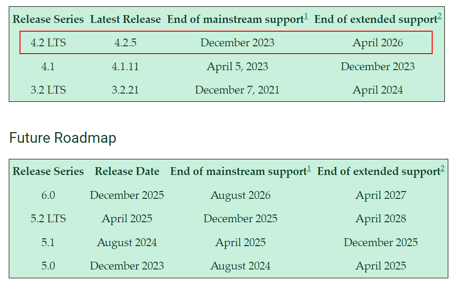
在本地安装，打开终端，执行：
xxxxxxxxxx51# 安装最新版本django2pip install django34# 安装指定版本的django5pip install django==4.2.5如果安装太慢，可以选择使用镜像源（像镜子一样与国外的服务器保持同步，每秒同步更新）：
xxxxxxxxxx51pip镜像源:2 https://pypi.tuna.tsinghua.edu.cn/simple 清华源34使用格式:5 pip install -U django -i https://pypi.douban.com/simple当然在以后开发或者学习中,我们肯定都会遇到在一台开发机子中,运行多个项目的情况,有时候还会出现每个项目的python解析器或者依赖包的版本有差异.
python开发的虚拟环境（Virtual Enviroment），主要是以目录作为单位分别保存不同的python解释器与第三方模块的一种技术。
使用虚拟环境，可以让一台开发机子，同时安装多个不同的python解释器，也可以实现同时安装同一个模块的多个不同版本。
常用的虚拟环境：Anaconda、Virtualenvs、pyvenv
conda是为了解决传统的虚拟环境问题而出现的虚拟环境管理工具，conda在virtualenv基础上，提取了公共代码保存到一个公共目录，独立代码分离开来的模式解决了virtualenv的解释器复制问题，同时conda还可以通过自动管理python解释器的功能，允许我们创建虚拟环境目录时自由的选择不同的python解释器版本。conda一共有2个版本：miniconda与anaconda。
其中，anaconda是conda的完整版本，内置了将近300个关于服务端开发，人工智能，数据分析，爬虫，测试，运维等常用第三方模块。而miniconda则是conda的简单版本，内置了将近30个常用第三方模块。所以学习的时候，建议在本地安装anaconda，在公司开发或项目部署时使用miniconda。
anaconda下载地址：https://repo.anaconda.com/archive/
miniconda下载地址：https://repo.anaconda.com/miniconda/
conda还提供了一个类似pypi的包模块管理库，可以让我们搜索到10年前的包：https://anaconda.org/
| 命令 | 描述 |
|---|---|
| conda -V | 查看conda版本 |
| conda info | 查看当前Anaconda的系统配置信息 |
| conda env list | 列出当前系统中所有虚拟环境，环境列表左边*号表示当前所在环境，也可以使用 conda info -e查看，注意：conda安装到本地以后，默认就提供了一个全局版本的虚拟环境，叫base |
| conda create -n <虚拟环境名称> python=<python版本号> <包名1>==<版本号> | 新建虚拟环境，-n表示设置当前虚拟环境的名称， python表示设置当前虚拟环境的python版本，如果本地没有会自动下载安装 表示创建虚拟环境时同时安装一个或多个指定第三方包 |
| conda create -n <新的虚拟环境名称> --clone <旧的虚拟环境名称> | 克隆虚拟环境 |
| conda activate <虚拟环境名称> | 进入/切换到指定名称的虚拟环境，如果不带任何参数，则默认回到全局虚拟环境base中 |
| conda deactivate | 退出当前虚拟环境 |
| conda install -n <虚拟环境名称> <包名1>==<版本号> | 在虚拟环境外部，给指定虚拟环境安装或更新一个或多个指定包 如果是最新的版本的包，conda install无法安装，则可以使用pip install安装 |
| conda install <包名1>==<版本号> | 在虚拟环境内部，给当前虚拟环境安装或更新一个或多个指定包 |
| conda install <包名1>==<版本号> -c conda-force | 在虚拟环境内部，指定下载服务器源给当前虚拟环境安装或更新一个或多个指定包，conda-force有时候会因为网络问题被拦截。 |
| conda remove -n <虚拟环境名称> <包名1>==<版本号> | 在虚拟环境外部，给指定虚拟环境卸载一个或多个指定包 |
| conda remove <包名1>==<版本号> | 在虚拟环境内部，给当前虚拟环境卸载一个或多个指定包 |
| conda remove -n <虚拟环境名称> --all | 删除指定虚拟环境，并卸载该环境中所有指定包 |
| conda env export > environment.yaml | 导出当前虚拟环境的Anaconda包信息到环境配置文件environment.yaml中 |
| conda env create -f environment.yaml | 根据环境配置文件environment.yaml的包信息来创建新的虚拟环境 |
| conda update --prefix <anaconda安装目录> anaconda | 更新Anaconda的版本。 先回到base环境，再执行conda update，系统会自动提示完整并正确的命令 如果上述方法不行，只能卸载现有的conda，然后下载最新版本安装。 |
xxxxxxxxxx511# 新建虚拟环境2# -n <虚拟环境名称> 或者 --name <虚拟环境名称>3# 表示设置当前虚拟环境的名称4# python=<python版本号>5# 表示设置当前虚拟环境的python版本，如果本地没有会自动下载安装67# <包名>==<版本号>8# 表示创建虚拟环境时同时安装一个或多个指定第三方包9# 可指定版本号，如果不指定版本，则安装当前python环境能支持的最新版本的包10# 注意:11# 指定包的版本时，有可能会因为没有这个版本或当前python环境不支持当前版本而导致虚拟环境创建失败。12# 所以，建议指定包版本时，尽量使用*号表示小版本，例如：django==1.*1314conda create -n <虚拟环境名称> python=<python版本号> <包名1>==<版本号> <包名2> ... <包名n>1516# 例如：17conda create -n py27 python=2.718conda create -n py36 python=3.6 pymongo # 表示安装pymongo模块的最新版本19conda create -n pro1 python=3.8 flask celery # 表示安装2个包20conda create -n pro2 python=3.6 django==2.2.0 pymysql # 表示安装django指定版本，pymysql的最新版本2122# 克隆虚拟环境23conda create -n <新的虚拟环境名称> --clone <旧的虚拟环境名称>2425# 进入/切换到指定名称的虚拟环境，如果不带任何参数，则默认回到全局环境base中。26conda activate <虚拟环境名称>2728# 退出当前虚拟环境29conda deactivate3031# 在虚拟环境外部，给指定虚拟环境安装/或者更新一个或多个指定包32conda install -n <虚拟环境名称> <包名1>==<版本号> <包名2> ... <包名n>33# 也可以在进入虚拟环境以后，通过conda install <包名> 来完成安装工作34conda install <包名1>==<版本号> <包名2> ... <包名n>3536# 在虚拟环境外部，给指定虚拟环境卸载一个或多个指定包37conda remove -n <虚拟环境名称> <包名1>==<版本号> <包名2> ... <包名n>38# 也可以在进入虚拟环境以后，通过conda remove <包名> 来完成卸载工作39conda remove <包名1>==<版本号> <包名2> ... <包名n>4041# 删除指定虚拟环境42conda remove -n <虚拟环境名称> --all4344# 导出当前虚拟环境的Anaconda包信息到环境配置文件environment.yaml中45conda env export > environment.yaml 4647# 根据环境配置文件environment.yaml的包信息来创建新的虚拟环境48conda env create -f environment.yaml4950# 更新Anaconda的版本，这里可以先执行conda update，系统会自动提示完整并正确的命令51conda update --prefix <anaconda安装目录> anaconda注意：
有了Anaconda以后，要养成一个习惯：新建一个项目，就给这个项目单独分配一个虚拟环境。
创建虚拟环境并在虚拟环境中下载安装django包
xxxxxxxxxx91# 创建djdemo虚拟环境，务必要指定python解析器的版本2conda create -n py310 python=3.103# 进入虚拟环境4conda activate py3105# 安装django基本模块6pip install django==4.2.5 -i https://pypi.tuna.tsinghua.edu.cn/simple78# 生成一个具有基本目录结构的django项目，在python安装了django包以后，默认就提供了一个全局命令django-admin，可以让我们基于django-admin快速创建django项目9django-admin startproject djdemo # djdemo 就是项目目录名，建议采用与项目相关的名称，最好英文！！！通过pycharm打开django创建的项目目录
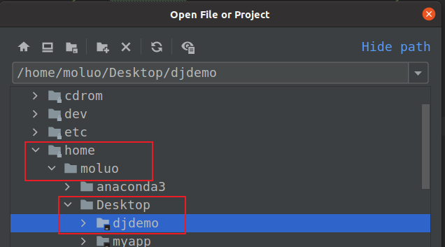
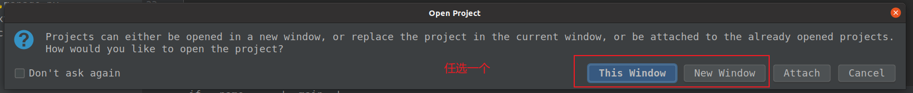
在pychatm中配置运行当前项目的所在虚拟环境中的python解释器.
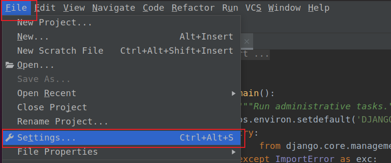
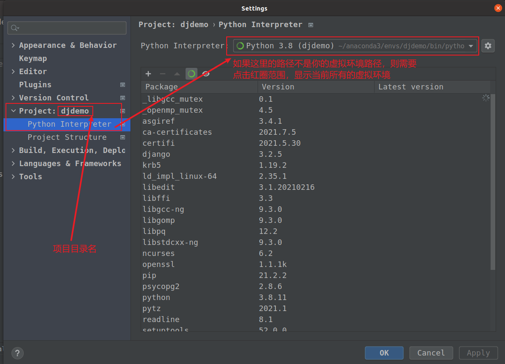 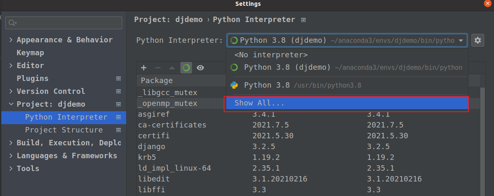
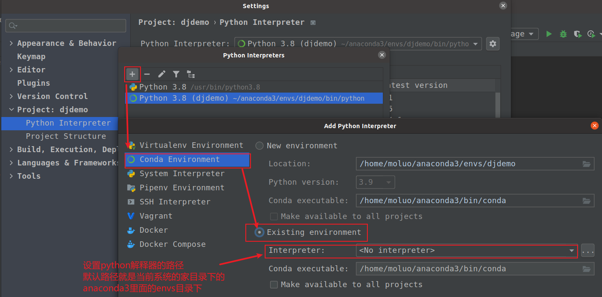
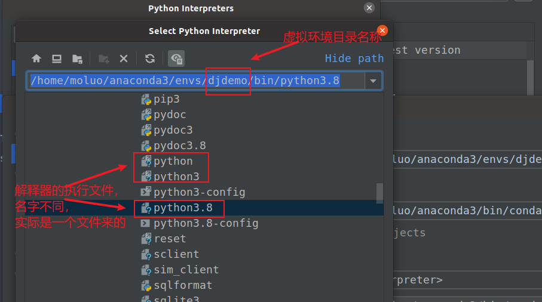
设置完成了以后,直接直接下pycharm下面的终端terminal中使用命令运行django
xxxxxxxxxx11python manage.py runserver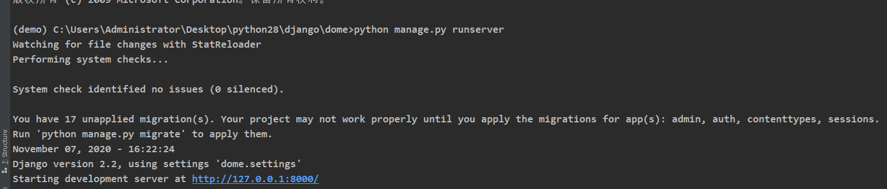
在浏览器中访问显示的地址http://127.0.0.1:8000.效果如下则表示正确安装了.
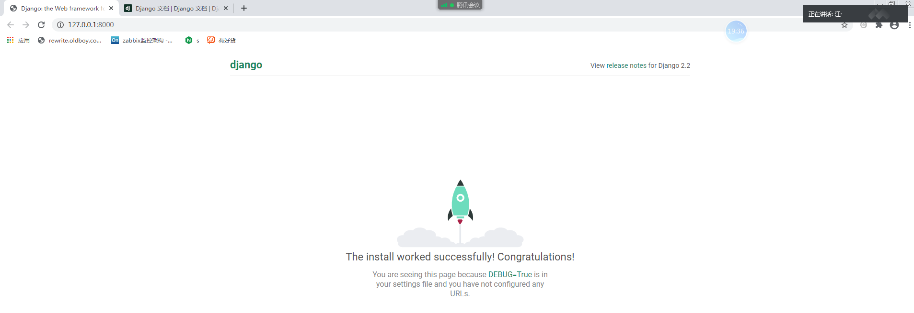
当然如果每次运行项目都要在终端下输入命令的话,很麻烦,这时候我们可以借助pycharm直接自动运行这段命令.当然,这个需要我们在pycharm配置一下的.
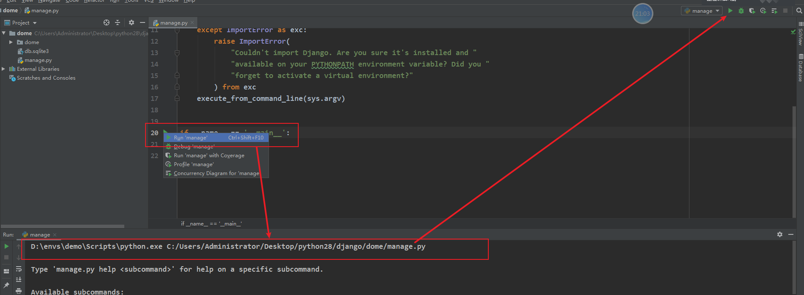
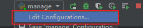(小三角形)
可以在runserver 参数后配置修改django监听的端口和IP地址,当然,只能是127.0.0.1对应的其他地址.不能是任意IP.否则无法运行或访问!!
xxxxxxxxxx21runserver 127.0.0.1:8000 # 只允许当前操作系统通过本地IP/域名访问2runserver 0.0.0.0:8088 # 允许其他的操作系统通过IP/域名访问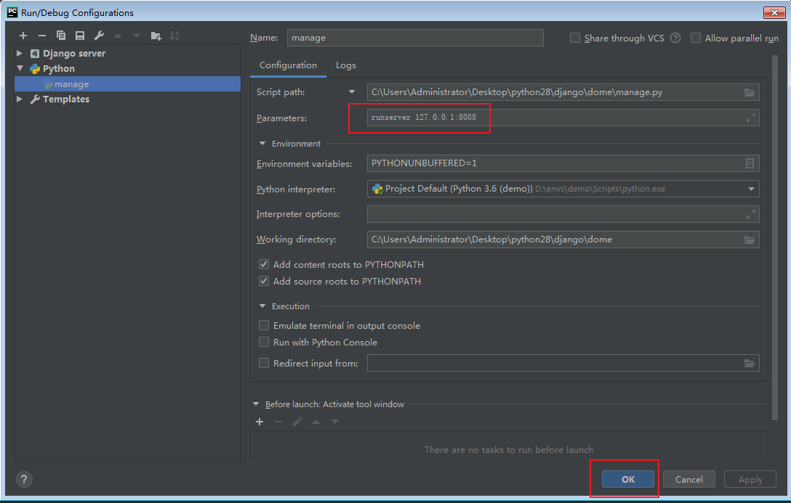
xxxxxxxxxx81djdemo/ # 项目根目录2│─ manage.py # 入口程序，终端脚本命令, 提供了一系列用于生成文件或者目录的命令,也叫脚手架3└─ djdemo/ # 主应用开发目录,保存了项目中的所有开发人员编写的代码, 目录是生成项目时指定的4 │- asgi.py # django3.0以后新增的，用于让django运行在异步编程模式的一个web应用对象5 │- settings.py # 默认开发配置文件，将来填写数据库账号，密码等相关配置6 │- urls.py # 总路由文件,用于绑定django应用程序和url的映射关系7 │- wsgi.py # wsgi就是项目运行在wsgi服务器时的入口文件, 本质上来说，manage.py runserver 内部调用的就是wsgi8 └- __init__.py # 包初始化文件
在django中要提供数据展示给用户,我们需要完成3个步骤.
xxxxxxxxxx611. 创建子应用232. 在子应用的视图文件views.py 中编写视图函数453. 把视图函数和url进行绑定注册到django项目.6 用户就可以通过url地址访问，用户访问的时候，django自动根据url地址执行对应的视图函数xxxxxxxxxx21python manage.py startapp 子应用名称（目录）2django-admin startapp 子应用名称子应用的名称将来会作为目录名而存在，务必按变量名的命名规则来创建，不能出现特殊符号,也是不能出现中文等多字节的字符，更不能以数字开头！！！
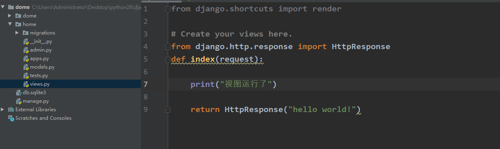
home/views.py,代码:
xxxxxxxxxx41from django.http.response import HttpResponse2def index(request):3 print("视图运行了")4 return HttpResponse("hello world!")
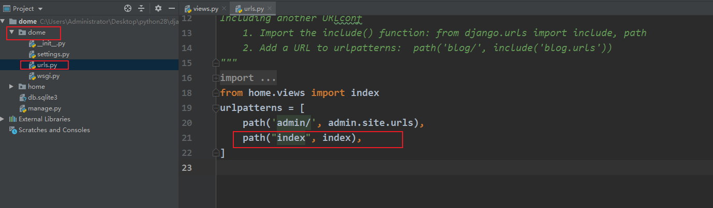
djdemo/urls.py代码：
xxxxxxxxxx81from django.contrib import admin2from django.urls import path3from home.views import index4urlpatterns = [5 path('admin/', admin.site.urls),6 path("index/", index),7]8因为上面我们绑定index视图函数的url地址是index,所以我们可以通过http://127.0.0.1:8000/拼接url地址index来访问视图函数
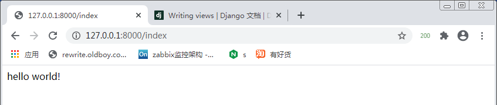
上面的过程,我们就可以展示数据给客户端浏览器了.但是这个过程发生了什么,怎么实现的?我们需要清晰几个相关概念：网页类型，web服务器和MVT设计模式，路由。
某一天，你的老板让你开发一款新闻站点，你有什么办法呢？
学过web前端以后我们可以知道，我们可以把新闻内容写在html页面中，并加上美丽的*css*样式，绚丽的*js*动画效果，以此呈现出新闻网页。
但是我们要考虑一个问题，新闻每一天都是不停变化的，那么我们就要让阅读者每天看到的页面里面显示的都是当天新闻才行。
此时如果，有个前端工程师一天24小时，时刻快速地将每一个崭新的新闻内容快速的写入在网页中，那么就可以实现了。
当然基于这种把内容直接写死在网页中呈现给外界的方式，我们可以称为"静态化"或者"网页静态化"。
而基于静态化技术所实现网站，也就是静态网站了。
静态化经常使用在一些网站数据不经常改变的场景下，网站内容一经发布，几乎不会更新。比如美女图片网站、公司企业的官网、新闻站点、小说站点。
网页静态化的优点：
网页静态化的缺点：
xxxxxxxxxx271<html lang="en">3<head>4 <meta charset="UTF-8">5 <title>墨西哥“外星人尸体”骗局</title>6</head>7<body>8 <div class="menu">9 <a href="">首页</a>10 <a href="">新闻</a>11 <a href="">娱乐</a>12 <a href="">服务</a>13 </div>14 <div class="content">15 <p>16 当地时间9月12日，UFO（不明飞行物）专家在墨西哥国会展示在秘鲁发现的两具“外星人尸体”，据说已有上千年历史。17 可是，早在两年前，科学家们就揭穿了“外星人尸体”的骗局，指出这些尸体实际上是由“人骨和兽骨的大杂烩”组成的。18 </p>19 <p>20 9月12日，墨西哥国会首次就“不明飞行物”问题举行听证会。21 </p>22 <p>23 据报道，12日当天，墨西哥国会首次就“不明飞行物”问题举行听证会，记者和所谓“UFO学家”莫桑（Jaime Maussan）在听证会上展示了据称在秘鲁发现的两具“外星人尸体”，据说已有上千年历史。24 </p>25 </div>26</body>27</html>
在实际生活中，类似网易新闻这样的网站，每天每时每刻都会发布来自全球各地的新闻，单靠1个前端工程师能解决这样的时刻海量的数据更新吗？很明显，通过手动创建静态网页来完成更新是不实际的。
于是乎，久而久之，人们发现我们其实展示数据的页面都是类似的，只是每一个位置上每一天的内容不一样，那么可以提前在这些内容变化位置挖一些坑（block），后续用户访问时通过服务端编程语言从数据库等存储设备中读取到真正的内容并更新到这些坑上，这种技术，我们就称之为"动态化"或者"网页动态化"。
而基于动态化技术所实现网站，也就是动态网站了。
动态化经常使用在一些网站数据经常改变的场景下，网站内容在发布以后，还会继续不断更新或修改。比如聊天网站、炒股网站等。
网页动态化的优点：
网页动态化的缺点：
xxxxxxxxxx151<html lang="en">3<head>4 <meta charset="UTF-8">5 <title>{{title}}</title>6</head>7<body>8 <div class="menu">9 {{menu}}10 </div>11 <div class="content">12 {{content}}13 </div>14</body>15</html>
在实际开发实践中，往往也存在很多的网站，是动态化+静态化结合实现的。
xxxxxxxxxx181<html lang="en">3<head>4 <meta charset="UTF-8">5 <title>{{title}}</title>6</head>7<body>8 <div class="menu">9 <a href="">首页</a>10 <a href="">新闻</a>11 <a href="">娱乐</a>12 <a href="">服务</a>13 </div>14 <div class="content">15 {{content}}16 </div>17</body>18</html>
web服务器，全称也叫http web server，专门用于提供网页文件浏览的一类服务器软件，本质上就是一种收发http协议并解析http内容的服务器软件，可以通过各类语言使用代码开发实现。
前面的学习中，我们在编辑器中执行manage.py文件以后, 之所以用户能使用浏览器访问视图函数就是django内置的测试web服务器的功劳.
常见的web服务器软件: nginx，uwsgi，gunicorn，apache，toncat，uvicon。
其中, uwsgi和gunicorn, uvicon就是使用python开发的web服务器软件。
注意: 大部分的项目框架都有内置的测试web服务器。其中django框架就内置了python解析器提供的wsgiref模块，这个模块是python官方提供给开发者进行学习测试使用的，不能用于项目实际运营的线上环境中, 因为这个测试web服务器，性能不好，不支持多线程。
wsgi 就是python基于cgi标准实现的http通讯技术 asgi 就是wsgi的异步版本，async就是这个a，也就是python使用协程异步基于cgi标准实现的异步http通信技术。
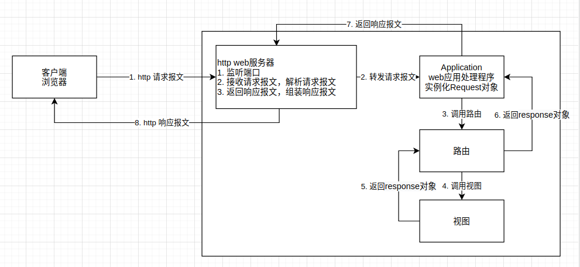
所谓的设计模式，就是前人针对解决常用业务场景所总结出来的一套解决方案【解决问题的流程】。
*Django*主要采用MVT模式。
*M-model*：模型，操作数据库功能部分。
*V-View*：视图，处理业务逻辑的位置，提取数据、获取用户数据等等操作都在这里。
*T-Template*：模版，用来展示视图操作后的数据，也可以在模版中为用户提供表单，让用户可以提交数据。
| MVT | MVC | 描述 |
|---|---|---|
| *M-model* | *M-model* | 数据模型 |
| *V-View* | *C-Controller* | 业务逻辑 |
| *T-Template* | *V-view* | 外观效果 |
xxxxxxxxxx71# MVT 的交互流程 --前后端不分离开发， 后台工程师 会写前端代码（所有的， 只写模板部分）2# MVC 前后端分离， 后台工程师 只写后台代码--json数据31. 发请求----django框架--V--处理主业务逻辑（1.判断路由 2.解析参数 3.对接Model 4.返回数据）42. V--获取数据--Model(交互数据库)53. model--->V64. V-->数据---Template-模板75. Template--模板-数据渲染--V--展示--客户端*M-model*：数据模型，和MVT的 m 是一样的，同样用来操作数据库
*V-view*：视图，和MVT的 T 是一样的，用来进行数据的可视化
*C-Controller*：控制器，相当于MVT中的 C，用来进行数据的逻辑操作
xxxxxxxxxx51# MVC 的交互流程21. 前端 View视图里面页面--发送请求 给后台后端32. 控制器来接收请求Controller----> 处理主业务逻辑（1.判断路由 2.解析参数 3.对接Model 4.返回数据）43. Model-交互数据库-返回数据给 C 54. C把数据 传给V 展示
Route路由, 是一种映射关系!!!路由是把客户端请求的url地址和用户请求的应用程序[这里意指django里面的视图]进行一对一绑定映射的一种关系。当然在项目中，我们常常说的路由一般是一个类。 这个类完成了路由要做的事情。
django的视图主要有2种写法的视图，分别是函数视图（Function Base View，FBV）和类视图（Class Base View，CBV）。
现在刚开始学习django，我们先学习函数视图(FBV)，后面再学习类视图[CBV]。
django中所有的视图都建议编写在子应用的views.py文件中。
xxxxxxxxxx51from django.http.response import HttpResponse2def index(request):3 # 代码4 return HttpResponse("返回内容")5函数视图名称，同一个模块下不能重复，同时采用变量命名规则.
视图中的request，实际上是django源码中的HTTPRequest的子类WSGIRequest类的实例对象，主要由django对客户端请求的http协议报文进行解析后得到的请求相关数据都在request对象中。
web项目运行在http协议下，默认肯定也支持用户通过不同的http请求方法发送数据到服务端。常用的http请求方法：
| HTTP请求方法 | 描述 |
|---|---|
| POST | 添加/上传 |
| GET | 获取/下载 |
| PUT | 修改/更新，修改整体 |
| PATCH | 修改/更新，修改部分 |
| DELETE | 删除/废弃 |
django支持让客户端只能通过指定的Http请求来访问到项目的视图
home/views.py,代码:
xxxxxxxxxx51# 让用户发送POST才能访问的页面2from django.views.decorators.http import require_http_methods3(["POST"]) # 注意，中括号中的请求方法名务必大写！！！否则无法正常显示4def login(request):5 return HttpResponse("登录成功！")路由绑定
demo/urls.py,代码:
xxxxxxxxxx81from django.contrib import admin2from django.urls import path3from home.views import index,index24urlpatterns = [5 path('admin/', admin.site.urls),6 path("index", index),7 path("login", login),8]通过浏览器，访问效果http://127.0.0.1:8000/login:
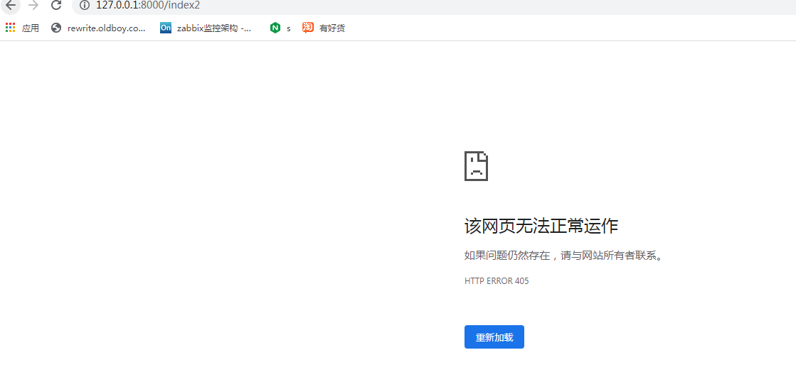
上面地址无法访问内容,就是因为我们在视图中设置了客户端只能通过POST请求访问当前视图,而用户默认通过浏览器进行访问地址,默认使用的是GET,所以出现无法访问情况.那么正常情况下,我们用户发送POST一般肯定通过使用html网页中的表单/js里面提供http请求的ajax才可以做到发送POST或GET或PUT/PATCH,而现在我们没有表单,因此我们可以安装一个postman的软件,这个软件类似浏览器但是功能比浏览器要强大,专门提供给开发人员免费使用的.
xxxxxxxxxx21选择适合自己操作系统的postman软件2官网下载地址: https://www.postman.com/downloads/
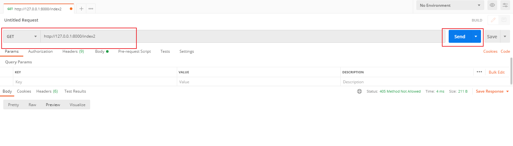
把post地址栏左边的http请求方法改成POST,点击右边的send,访问http://127.0.0.1:8000/login,效果：
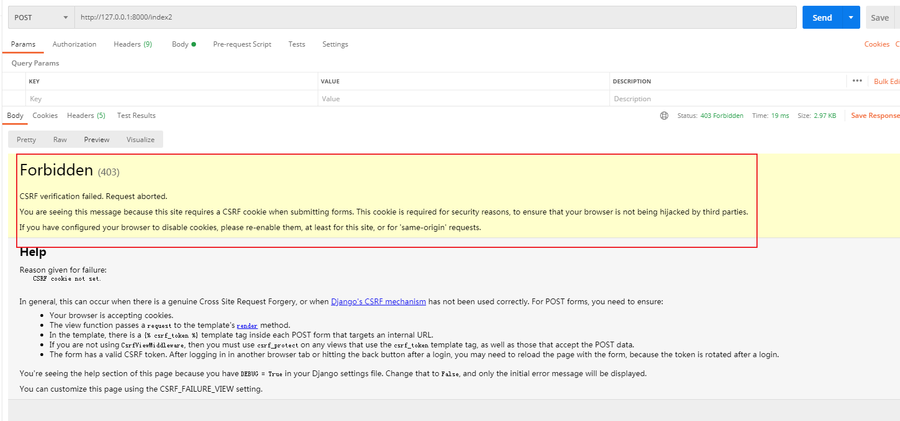
上面出现一大堆提示,这个其实就已经访问到项目中了, 当然此处提示的CSRF其实是django为了保护网站安全设置一种安全访问机制.后面我们学习到,现在我们可以先打开djdemo/settings.py配置文件中的47行附近处通过注释关闭掉这个功能先. djdemo/settings.py，代码：
xxxxxxxxxx91MIDDLEWARE = [2 'django.middleware.security.SecurityMiddleware',3 'django.contrib.sessions.middleware.SessionMiddleware',4 'django.middleware.common.CommonMiddleware',5 # 'django.middleware.csrf.CsrfViewMiddleware', # ctrl+/6 'django.contrib.auth.middleware.AuthenticationMiddleware',7 'django.contrib.messages.middleware.MessageMiddleware',8 'django.middleware.clickjacking.XFrameOptionsMiddleware',9]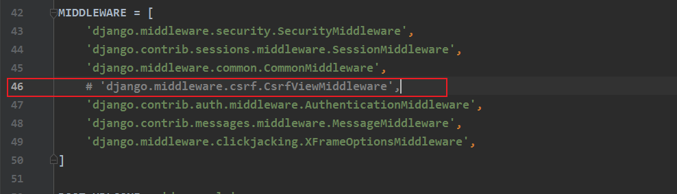
关闭了csrf防范功能以后,继续使用postman访问http://127.0.0.1:8000/login效果如下:
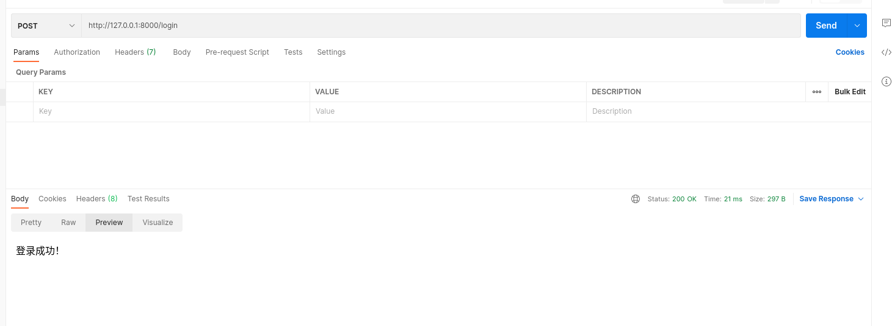
经过上面的学习，我们可以发现，每次编写视图函数都需要到路由文件中进行url地址绑定，但是随着项目的开发，以后我们的视图函数肯定是越来越多的。
为了避免将来视图函数太多导致无法明确区分哪些路由属于哪一个子应用的。我们可以现在刚开始项目的时候，把路由代码放回到对应的各个子应用目录下，单独存放。这就是django提供的路由分层。
urls.py home/urls.py，代码：
xxxxxxxxxx71from django.urls import path2from home import views34urlpatterns = [5 # path('路由尾缀', 视图函数导包路径),6 path('index', views.index),7]djdemo/urls.py中通过include加载路由文件到django项目中djdemo/urls.py，代码:
xxxxxxxxxx91"""总路由"""2from django.contrib import admin3from django.urls import path, include45urlpatterns = [6 path('admin/', admin.site.urls),7 # path('路由前缀/', include('子应用urls文件的导包路径')),8 path('home/', include('home.urls')),9]注意：
当django项目中的路由分层以后，视图的访问地址就分成2段组合：总路由和子应用路由。那么用户访问视图,则访问url地址的规则:
http://127.0.0.1:8000/路由前缀+子应用路由的url地址
例如: 总路由中注册子应用路由时, 路由前缀为 "home"
子路由文件中有一个函数视图的url地址为: "index",
则用户访问时 正确的地址就是:
http://127.0.0.1:8000/homeindex当然,如果路由前缀是 "home/", 而子路由的url地址为 "index"
则用户访问时 正确的地址就是:
http://127.0.0.1:8000/home/index
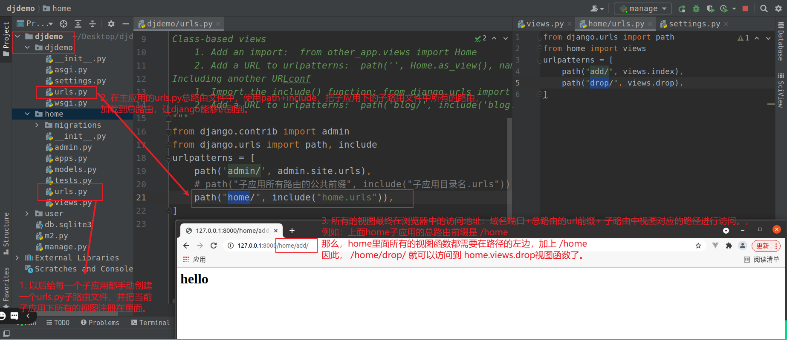
xxxxxxxxxx141在http请求和响应过程中, 用户往往会在请求过程中发送请求信息给服务端。那么客户端发送请求数据一般无非以下几种格式：21. 查询字符串[Query String]3所谓的查询字符串就是url地址上面?号后面的数据，例如:4http://127.0.0.1:8000/home/index/?name=xiaoming&pwd=1235上面name=xiaoming&pwd=123 就是查询字符串6可以通过 request.GET 来获取。7注意: request.GET不是http请求，也就是说，只要地址上有查询字符串，不管使用什么样的http请求方法，都可以在视图中使用request.GET来获取参数892. 请求体数据[request.POST 接受表单 request.body 接受请求体]10113. 请求头报文信息[request.headers]12134. 上传文件[request.FILES]14
home/views.py
xxxxxxxxxx511from django.http.response import HttpResponse2from django.views.decorators.http import require_http_methods3from django.http import QueryDict45# Create your views here.6def index(request):7 print("index视图运行了")8 # print(request.method)9 # print(request.headers)10 # print(request.body)11 # print(request.path)1213 """获取查询字符串"""14 """15 请求地址：http://127.0.0.1:8000/home/index16 """17 print(request.GET) # 获取地址栏上的所有的查询字符串，组成一个QueryDict查询字典对象18 """19 打印效果：<QueryDict: {}>20 QueryDict的声明位置: from django.http import QueryDict21 QueryDict的父类MultiValueDict继承的就是dict字典,所以字典提供的方法或者操作, QueryDict都有22 之所以使用QueryDict来保存请求参数的原因时：默认的字典的键是唯一的，所以会导致如果有多个值使用了同一个键，则字典会覆盖的。23 而django内部封装的QueryDict允许多个值使用了同一个键，会自动收集所有的值保存在一个列表中作为当前键的值区寄存起来。24 QueryDict常用的方法有2个：25 get(键, 默认值) 通过指定键获取最后1个值26 getlist(键, 默认值) 通过指定键获取所有值，并以列表格式返回27 """2829 """30 请求地址：http://127.0.0.1:8000/home/index?name=xiapming&pwd=12331 """32 print(request.GET) # <QueryDict: {'name': ['xiaoming'], 'pwd': ['123']}>33 print(request.GET.get("name"))34 print(request.GET.get("pwd"))35 # print(request.Get["pwd"]) # 减少使用中括号，会在没有键的情况下导致程序报错36 """37 打印效果：38 1331234567839 xiapming40 12341 """4243 """44 请求地址：http://127.0.0.1:8000/home/index/?name=xiaoming&mobile=13312345678&lve=swimming&lve=shopping&lve=game45 """46 print(request.GET.get("lve")) # game47 print(request.GET.getlist("lve")) # ['swimming', 'shopping', 'game']48 print(request.GET.getlist("name")) # ['xiaoming']495051 return HttpResponse("<h1>index</h1>")home/urls.py，代码：
xxxxxxxxxx71from django.urls import path2from home import views34urlpatterns = [5 path('index', views.index),6]7
在各种http请求方法中，POST/PUT/PATCH都是可以设置请求体的。request.POST中获取客户端通过POST发送过来的表单数据，无法获取PUT/PATCH的请求体。
xxxxxxxxxx1061from django.http.response import HttpResponse2from django.views.decorators.http import require_http_methods3from django.http import QueryDict45# Create your views here.6def index(request):7 print("index视图运行了")8 # print(request.method)9 # print(request.headers)10 # print(request.body)11 # print(request.path)1213 """获取查询字符串"""14 """15 请求地址：http://127.0.0.1:8000/home/index16 """17 print(request.GET) # 获取地址栏上的所有的查询字符串，组成一个QueryDict查询字典对象18 """19 打印效果：<QueryDict: {}>20 QueryDict的声明位置: from django.http import QueryDict21 QueryDict的父类继承的就是dict字典,所以字典提供的方法或者操作, QueryDict都有22 之所以使用QueryDict来保存请求参数的原因时：默认的字典的键是唯一的，所以会导致如果有多个值使用了同一个键，则字典会覆盖的。23 而django内部封装的QueryDict允许多个值使用了同一个键，会自动收集所有的值保存在一个列表中作为当前键的值区寄存起来。24 QueryDict常用的方法有2个：25 get(键) 通过指定键获取最后1个值26 getlist(键) 通过指定键获取所有值，并以列表格式返回27 """2829 """30 请求地址：http://127.0.0.1:8000/home/index?name=xiapming&mobile=1331234567831 """32 print(request.GET.get("mobile"))33 print(request.GET.get("name"))34 print(request.GET.get("pwd", 123))35 # print(request.Get["pwd"]) # 减少使用中括号，会在没有键的情况下导致程序报错36 """37 打印效果：38 1331234567839 xiapming40 12341 """4243 """44 请求地址：http://127.0.0.1:8000/home/index?name=xiaoming&mobile=13312345678&lve=swimming&lve=shopping&lve=game45 """46 print(request.GET.get("lve")) # game47 print(request.GET.getlist("lve")) # ['swimming', 'shopping', 'game']48 print(request.GET.getlist("name")) # ['xiaoming']495051 return HttpResponse("<h1>index</h1>")525354# @require_http_methods(["POST", "PUT"]) # 注意，中括号中的请求方法名务必大写！！！否则无法正常显示55def index2(request):56 """获取请求体数据"""57 """58 访问地址：http://127.0.0.1:8000/home/index259 请求体：不设置请求体60 """61 # print(request.POST)62 """63 request.POST获取的结果也是QueryDict查询字典对象64 <QueryDict: {}>65 """6667 """68 访问地址：http://127.0.0.1:8000/home/index269 请求体：name=xiaoming&age=1670 """71 # print(request.POST)7273 """74 打印效果：75 <QueryDict: {'name': ['xiaoming'], 'age': ['16']}>76 """77 # print(request.POST.get("name"))787980 """81 访问地址：http://127.0.0.1:8000/home/index282 请求体：name=xiaoming&age=16&citys=["北京", "上海", "天津]83 """84 """85 打印效果：86 <QueryDict: {'name': ['xiaoming'], 'age': ['16'], 'citys': ['北京', '上海', '天津']}>87 """88 #89 # print(request.POST) # ['北京', '上海', '天津']90 # print(request.POST.getlist("citys"))91 # print(request.POST.get("citys")) # 天津929394 """接收原生请求体中的json数据"""95 """96 请求地址：http://127.0.0.1:8000/home/index297 请求体为json：'{"name": "xiaobai","age": 16}'98 """99 # print(request.POST) # <QueryDict: {}>100 # print(request.body) # b'{\n "name": "xiaobai",\n "age": 16\n}'101 # import json102 # print(json.loads(request.body)) # {'name': 'xiaobai', 'age': 16}103104 105106 return HttpResponse("index2！")home/urls.py代码:
xxxxxxxxxx81from django.urls import path2from home import views34urlpatterns = [5 path('index', views.index),6 path('index2', views.index2),7]8
xxxxxxxxxx521def index3(request):2 """接收请求体参数"""3 print(request.META) # 获取当前项目相关的服务器与客户端环境信息，也包含了请求头信息，以及服务端所在的系统的环境变量4 """5 {6 'LANG': 'zh_CN.UTF-8', # 服务端系统的默认语言7 'USER': 'moluo', # 服务端运行的系统用户名8 'HOME': '/home/moluo', # 服务端运行的系统用户家目录路径9 'DJANGO_SETTINGS_MODULE': 'djdemo.settings', # 只有在django下才有的，当前django框架运行时加载的配置文件导包路径10 'SERVER_NAME': 'ubuntu', # 服务端系统名称11 'SERVER_PORT': '8000', # 服务端的运行端口12 'REMOTE_HOST': '', # 客户端的所在IP地址，有时候可能是域名13 'SCRIPT_NAME': '', # 客户端本次请求时，服务端执行的程序所在路径14 'SERVER_PROTOCOL': 'HTTP/1.1', # 服务端运行的协议15 'SERVER_SOFTWARE': 'WSGIServer/0.2', # 服务端运行web服务器的软件打印信息16 'REQUEST_METHOD': 'POST', # 客户端本次请求时的http请求方法17 'PATH_INFO': '/home/index3/', # 客户端本次请求时的url路径18 'QUERY_STRING': '', # 客户端本次请求时的查询字符串19 'REMOTE_ADDR': '127.0.0.1', # 客户端的所在IP地址20 'CONTENT_TYPE': 'application/json', # 客户端本次请求时的数据MIME格式21 'HTTP_USER_AGENT': 'PostmanRuntime/7.26.10', # 客户端本次请求时，所使用的网络代理软件提示信息22 'HTTP_ACCEPT': '*/*', # 客户端期望服务端返回的数据MIME格式格式23 'HTTP_HOST': '127.0.0.1:8000', # 客户端本次请求时，所使用服务端地址24 'HTTP_ACCEPT_ENCODING': 'gzip, deflate, br', # 客户端期望服务端返回的数据的压缩格式25 'HTTP_CONNECTION': 'keep-alive', # 客户端支持的服务端协议的链接类型,keep-alive 表示客户端支持http的长连接26 }27 """28 print(request.headers) # 获取HTTP请求头29 """30 {31 'Content-Length': '601', // 客户端本次请求的内容大小32 'Content-Type': 'multipart/form-data;', # 客户端本次请求的内容MIME类型33 'User-Agent': 'PostmanRuntime/7.26.10', # 客户端本次请求的代理软件打印信息34 'Accept': '*/*', 35 'Host': '127.0.0.1:8000', # 客户端本次请求的服务端地址36 'Accept-Encoding': 'gzip, deflate, br', 37 'Connection': 'keep-alive',38 # 以下就是自定义请求头了39 'Company': 'baidu', 40 'Num': '1000', 41 }42 """43 print("Content-Type=", request.META.get("CONTENT_TYPE"))44 print("自定义请求头，Num=", request.META.get("HTTP_NUM"))45 print("自定义请求头，Company=", request.META.get("HTTP_COMPANY"))4647 print("Content-Type=", request.headers.get("Content-Type"))48 print("自定义请求头，Num=", request.headers.get("Num"))49 print("自定义请求头，Company=", request.headers.get("Company"))5051 return HttpResponse("接收请求体")52常见的请求头：
SERVER_NAME， 服务端系统名称
SERVER_PORT， 服务端的运行端口
REMOTE_ADDR，客户端的所在IP地址
SERVER_SOFTWARE，服务端运行web服务器的软件打印信息
PATH_INFO，客户端本次请求时的url路径
home/urls.py，代码：
xxxxxxxxxx91from django.urls import path2from home import views34urlpatterns = [5 path('index', views.index),6 path('index2', views.index2),7 path('index3', views.index3),8]9
home/views.py，代码：
xxxxxxxxxx291def index4(request):2 """接收上传文件"""3 # print(request.FILES)4 """5 POST http://127.0.0.1:8000/home/index46 打印效果：7 <MultiValueDict: {'avatar': [<InMemoryUploadedFile: 1.jpg (image/jpeg)>]}>8 """910 # print(request.FILES.get("avatar")) # 获取本次客户端上传的指定name值对应的一个文件上传处理对象11 # print(request.FILES.getlist("avatar")) # 获取本次客户端上传的指定name值对应的多个文件上传处理对象1213 """14 django在解析http协议的时候，针对上传文件，会自动实例化一个内存保存文件的文件上传处理对象InMemoryUploadedFile15 from django.core.files.uploadedfile import InMemoryUploadedFile16 """17 # read() 从文件上传处理对象读取文件的内容(bytes格式内容)18 import os19 # # 处理一个上传文件[不仅是图片，任何内容都可以这样处理]20 # file = request.FILES.get('avatar')21 # with open(f"{os.path.dirname(__file__)}/{file.name}", "wb") as f:22 # f.write(file.read())2324 # 处理多个一次性上传文件25 for file in request.FILES.getlist("avatar"):26 with open(f"{os.path.dirname(__file__)}/{file.name}", "wb") as f:27 f.write(file.read())2829 return HttpResponse("接收客户端的上传文件")home/urls.py，代码：
xxxxxxxxxx111from django.urls import path2from home import views34urlpatterns = [5 path('index', views.index),6 path('index2', views.index2),7 path('index3', views.index3),8 path('index4', views.index4),9]1011
django和大多数的web框架一样，针对http的响应，提供了2种不同的响应方式：
响应内容，就是直接返回数据给客户端
响应页面跳转，就是通过返回页面跳转的信息给浏览器，让浏览器自己进行页面跳转
home/views.py，代码：
xxxxxxxxxx121def index5(request):2 """响应对象"""3 """4 return HttpResponse(content="正文内容",content_type="内容格式",status="http响应状态码")5 content 响应内容6 content_type 内容格式,默认是 text/html7 status 响应状态码,默认是 2008 headers 响应头，字典格式9 """1011 """返回html内容"""12 return HttpResponse("<h1>你好，django</h1>")home/urls.py，代码：
xxxxxxxxxx111from django.urls import path2from home import views34urlpatterns = [5 path('index', views.index),6 path('index2', views.index2),7 path('index3', views.index3),8 path('index4', views.index4),9 path('index5', views.index5),10]11
home/views.py，代码：
xxxxxxxxxx251def index6(request):2 """响应对象：响应json数据"""3 # 返回字典数据作为json给客户端4 """5 import json6 data = {"name":"xiaoming", "age":16, "sex": True}7 return HttpResponse(json.dumps(data), content_type="application/json;charset=utf-8")8 """910 # 原生返回json数据，太麻烦了11 # 因此django提供了一个HttpResponse的子类JsonResponse，转换提供给我们返回json数据的12 # from django.http.response import JsonResponse13 # data = {"name": "xiaoming", "age": 16, "sex": True}14 # return JsonResponse(data)1516 # JsonResponse返回的数据如果不是字典，则必须要加上safe参数声明，并且值为False17 # 返回列表数据给客户端18 from django.http.response import JsonResponse19 data = [20 {"id":1, "name": "小明", "age": 16},21 {"id":3, "name": "小火", "age": 15},22 ]2324 return JsonResponse(data, safe=False)25 # return JsonResponse(data, safe=False, json_dumps_params={"ensure_ascii": False}) # 不推荐使用home/urls.py，代码：
xxxxxxxxxx121from django.urls import path2from home import views34urlpatterns = [5 path('index', views.index),6 path('index2', views.index2),7 path('index3', views.index3),8 path('index4', views.index4),9 path('index5', views.index5),10 path('index6', views.index6),11]12
例如：图片，压缩包，视频，或js脚本，xls，docs，pdf，ppt
xxxxxxxxxx61def index7(request):2 """返回图片格式"""3 import os4 with open(f"{os.path.dirname(__file__)}/avatar.jpg", "rb") as f:5 content = f.read()6 return HttpResponse(content, content_type="image/jpeg")
xxxxxxxxxx61def index8(request):2 """返回压缩包格式"""3 import os4 with open(f"{os.path.dirname(__file__)}/code.zip", "rb") as f:5 content = f.read()6 return HttpResponse(content, content_type="application/zip")
xxxxxxxxxx71def index9(request):2 """返回数据的过程中设置响应头"""3 response = HttpResponse("ok")4 # 自定义响应头[值和属性都不能是多字节]5 response["company"] = "baidu"6 return response7home/urls.py，代码：
xxxxxxxxxx111from django.urls import path2from home import views34urlpatterns = [5 # 中间代码省略.....6 path('index6', views.index6),7 path('index7', views.index7),8 path('index8', views.index8),9 path('index9', views.index9),10]11
页面跳转也有2种方式：站外跳转与站内跳转。
home/views.py，代码：
xxxxxxxxxx171def index10(request):2 """跳转到站外"""3 # 1. 基于django提供的Response对象也可以进行页面跳转4 # from django.http.response import HttpResponse5 # response = HttpResponse(status=301)6 # response["Location"] = "https://www.tmall.com"7 # return response89 # # 2. 基于django提供的Response对象的原生写法[HttpResponseRedirect与HttpResponsePermanentRedirect都是HttpResponse的子类]10 # from django.http.response import HttpResponseRedirect # 临时重定向11 # # from django.http.response import HttpResponsePermanentRedirect # 永久重定向12 # return HttpResponseRedirect("https://www.qq.com")1314 # 2. 基于django提供快捷函数（简写函数, shortcuts）来完成[常用]15 from django.shortcuts import redirect16 return redirect("http://www.baidu.com")17home/urls.py，代码：
xxxxxxxxxx161from django.urls import path2from home import views34urlpatterns = [5 path('index', views.index),6 path('index2', views.index2),7 path('index3', views.index3),8 path('index4', views.index4),9 path('index5', views.index5),10 path('index6', views.index6),11 path('index7', views.index7),12 path('index8', views.index8),13 path('index9', views.index9),14 path('index10', views.index10),15]16
在站内跳转时,如果使用django.urls.reverse函数进行路由反转解析（可以根据路由的别名反向生成路由的URL地址）,则必须在总路由文件和子路由文件中，对路由的前缀和子路由后缀进行别名绑定，步骤如下：
djdemo/urls.py，总路由，代码：
xxxxxxxxxx71from django.contrib import admin2from django.urls import path, include34urlpatterns = [5 path('admin/', admin.site.urls),6 path('home/', include('home.urls', namespace="home")), # namespace 是include函数的参数，namespace的值就是提供给reverse使用的7]home/urls.py，子路由，代码：
xxxxxxxxxx211from django.urls import path2from home import views34# 使用路由反向解析，reverse时必须在当前路由文件中设置app_name为当前子应用的包名5app_name = "home"67urlpatterns = [8 path('index', views.index),9 path('index2', views.index2),10 path('index3', views.index3),11 path('index4', views.index4),12 path('index5', views.index5),13 path('index6', views.index6),14 path('index7', views.index7),15 path('index8', views.index8),16 path('index9', views.index9),17 path('index10', views.index10),18 path('index11', views.index11, name="in11"),19 path('index12', views.index12, name="in12"),20]21home/views.py，代码：
xxxxxxxxxx161def index11(request):2 """跳转到站内"""3 from django.shortcuts import redirect # 根据指定的url地址，进行页面跳转45 # # 直接基于redirect跳转6 # return redirect("/home/index12")78 # # 基于reverse+redirect对路由别名进行反向解析进行跳转9 from django.urls import reverse # 根据路由别名，反向解析生成url地址10 url = reverse("index:in12")11 print(url)12 return redirect(url)131415def index12(request):16 return HttpResponse("ok, index12")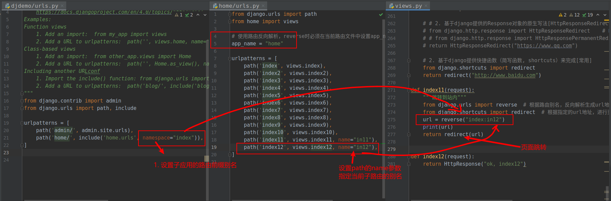
作业：
xxxxxxxxxx2011. 使用django提供的视图和路由接收postman发送到服务端的json数据2 postman：POST http://127.0.0.1:8000/users/login # 自己创建子应用，users，并提供对应的访问地址和视图3 设置postman发送raw->json4 json数据格式：5 {6 "token":"6702b2adad29098fb",7 "username": "root",8 "pwd": "123",9 "is_remember": true10 }11122. 服务端django视图接收上面的json数据以后，转换成字典格式，并以json格式采用列表返回给客户端以下格式数据：13[14 {15 "token":"6702b2adad29098fb",16 "username": "root",17 "uid": 1,18 "is_login": true19 }20 ]
在web开发领域，网络中网页之间进行内容传输使用的协议是http/https协议。
http协议是一种无状态, 有所请求必有所回应的超文本传输协议，HTTP为了提升效率，一经完成请求和响应的过程以后，就会自动关闭连接。所谓无状态意指: 基于http协议提供服务的服务端,无法识别前后多次请求过程中,是不是同一个客户端发送的还是多个客户端发送的。
web开发的应用往往不仅仅只是一个网页或一个功能，那么怎么多个页面不同的请求，识别用户之前的状态和行为？
为了能在多次请求过程中,识别客户端是否是同一个客户端,所以就出现了会话跟踪技术，就需要使用会话控制技术, 也叫会话保持或者会话跟踪技术.
会话控制技术，主要作用是为了识别和记录用户在web应用中的身份行为和操作历史。
会话的单词：session，所谓一次会话其实就是客户端和服务端之间进行通信的一次完整过程。
在web项目中：
客户端和服务端之间产生的会话开始于: 在用户第一次通过url访问网站的时候
客户端和服务端之间的会话结束于关闭浏览器
注意: 如果在移动端下面，则必须是关闭当前app应用才算结束会话，如果只是后台运行，会话并没有结束的.
所以会话跟踪技术就是在一次完整的会话中,能让服务端识别客户端在整个过程中的身份行为和操作历史的一项技术.
实现会话控制的几种技术类型：
xxxxxxxxxx511. url地址栏记录用户身份的参数[少见，很古老的技术了，例如：QQ邮箱，QQ空间]22. cookie: 在浏览器中由浏览器自动读写保存用户信息的一种小文件，能够存储的数据有限，30M左右，[过时了，谷歌在2021开始慢慢关闭这个cookie技术了]33. session: 在服务端中保存用户信息的文件存储信息技术，能够存储的数据视存储设备而定，根据服务端配置而定。session默认是基于cookie的44. token令牌: 就是一段可以记录和识别用户身份的字符串，通过客户端语言[js/安卓/ios]保存在客户端中一项技术，替代cookie或session.5jwt就是token技术的其中一种。Oauth2.0也是属于token令牌技术的一种。
cookie是保存在客户端浏览器中的小文本，由浏览器自动管理和收发, 所以cookie中不要保存用户的敏感信息，例如: 密码，身份证，手机号等等之类的。而且cookie在浏览器中用户是可以手动关闭或禁止cookie功能的.如果关闭了cookie功能,一般服务端能做的就只有2个事情了:1. 提示用户开启cookie功能, 2. 不要使用cookie进行会话控制了。
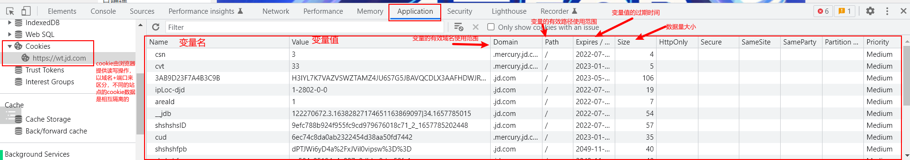
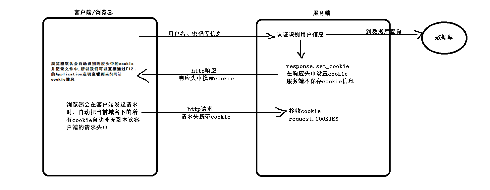
接下来，我们创建一个mycookie的子应用来完成学习。
xxxxxxxxxx11python manage.py startapp mycookiemycookie/urls.py，代码:
xxxxxxxxxx91# mycookie子应用的子路由文件2from django.urls import path3from . import views4app_name = "mycookie"5urlpatterns = [6 path("set", views.set_cookie),7 path("get", views.get_cookie),8 path("del", views.del_cookie),9]总路由，djdemo/urls.py，代码：
xxxxxxxxxx91from django.contrib import admin2from django.urls import path, include34urlpatterns = [5 path('admin/', admin.site.urls),6 path('home/', include('home.urls', namespace="index")), # namespace 是include函数的参数，namespace的值就是提供给reverse使用的7 path('cookie/', include("mycookie.urls")), # cookie功能学习8]9
在服务端生成cookie,发送到客户端浏览器保存,视图代码:
xxxxxxxxxx291from django.http.response import HttpResponse234def set_cookie(request):5 """设置/保存/更新Cookie"""6 response = HttpResponse()7 # 生成cookie8 """9 参数列表：10 key, # 键/变量11 value='', # 值/内容12 max_age=None, # 设置cookie的有效时间，单位: 秒13 expires=None, # 设置cookie的过期时间戳[时间戳表示从1970-01-01 00:00:00至今的总秒数]14 # datetime.now().timestamp() 获取时间戳15 # int( time.time() * 1000 ) 获取毫秒时间戳16 # datetime.now().timestamp() 获取毫秒时间戳1718 path=None, # 当前cookie是否只能在指定公共路径下使用，None表示在同一个域名下，任意路径都可以使用19 domain=None, # 当前cookie是否只能在指定同一段域名下使用，None表示在当前服务器所在域名下使用20 secure=False, # 当前cookie是否只能在https协议下使用，False表示在http协议下也能使用 21 httponly=False, # 当前cookie是否只能在http协议下使用,False表示在其他协议下也可以使用22 """23 response.set_cookie("uname", "xiaoming", max_age=5)24 response.set_cookie("uid", 100, max_age=180)25 # 设置cookie信息，可以不设置过期时间，默认cookie有效期的就是浏览器关闭时自动删除26 # 会话结束时浏览器会自动删除没有设置有效的cookie，而设置了有效期的cookie则只会在到期时才删除27 response.set_cookie("is_login", True, )28 return response29
在客户端中发送cookie, 服务端接收并读取cookie
xxxxxxxxxx101def get_cookie(request):2 """通过request.COOKIES可以获取客户端发送过来的cookie"""3 print(request.COOKIES) # 获取本次客户端发送过来的所有cookie4 print("uid=", request.COOKIES.get("uid")) # 获取指定名称cookie5 print("uname=", request.COOKIES.get("uname")) # 不存在的或过期的cookie不会被浏览器通过http请求头携带到服务端6 # cookie的修改，与添加一致，cookie重复的变量名会覆盖7 response = HttpResponse("OK")8 response.set_cookie("uname", "xiaohong", max_age=15)9 return response10
在服务端中删除cookie,在客户端中根据服务端的提示删除cookie
xxxxxxxxxx71def del_cookie(request):2 """直接删除cookie在服务端是做不到的，因为cookie保存在客户端，所以我们需要通知客户端自己去删除"""3 # 告诉浏览器，cookie过期了4 response = HttpResponse("告诉客户端，删除cookie")5 response.set_cookie("uid", "", max_age=0) # 设置有效期为0秒，当浏览器接受响应内容时，0秒早就到了，所以会自动删除6 return response7用户登录记录登陆状态操作，演示
xxxxxxxxxx871from django.http.response import HttpResponse2from django.shortcuts import redirect3from django.http.response import HttpResponseRedirect4from django.views.decorators.http import require_http_methods56# def login(request):7# """登录页面"""8#9# if request.method == "GET":10# """显示登录表单"""11# content = """12# <form action="/cookie/login/" method="POST">13# 登录账号：<input type="text" name="username"><br>14# 登录密码：<input type="password" name="password"><br>15# <button>登录</button>16# </form>17# """18# return HttpResponse(content)19#20# elif request.method == "POST":21# """处理登录信息"""22# username = request.POST.get("username")23# password = request.POST.get("password")24# # 到数据库中查询当前账号密码是否正确25# from hashlib import sha25626# sha = sha256()27# sha.update(password.encode())28# hash_pwd = sha.hexdigest()29# if username == "root" and hash_pwd == "8d969eef6ecad3c29a3a629280e686cf0c3f5d5a86aff3ca12020c923adc6c92":30# """登录成功"""31# # 记录登录状态32# response = HttpResponseRedirect("/cookie/info/")33# response.set_cookie("username", username)34# response.set_cookie("is_login", True, max_age=30*60)35# else:36# """登录失败"""37# response = HttpResponseRedirect("/cookie/login/")38# response["status"] = "fail"39# return response404142(["GET"])43def login(request):44 """显示登录表单"""45 content = """46 <form action="/cookie/login_handle/" method="POST">47 登录账号：<input type="text" name="username"><br>48 登录密码：<input type="password" name="password"><br>49 <button>登录</button>50 </form>51 """52 return HttpResponse(content)535455(["POST"])56def login_handle(request):57 """处理登录信息"""58 username = request.POST.get("username")59 password = request.POST.get("password")60 # 到数据库中查询当前账号密码是否正确61 from hashlib import sha25662 sha = sha256()63 sha.update(password.encode())64 hash_pwd = sha.hexdigest()65 if username == "root" and hash_pwd == "8d969eef6ecad3c29a3a629280e686cf0c3f5d5a86aff3ca12020c923adc6c92":66 """登录成功"""67 # 记录登录状态68 response = HttpResponseRedirect("/cookie/info/")69 response.set_cookie("username", username)70 response.set_cookie("is_login", True, max_age=30*60)71 else:72 """登录失败"""73 response = HttpResponseRedirect("/cookie/login/")74 response["status"] = "fail"75 return response767778def info(request):79 """用户中心-用户信息页面"""80 username = request.COOKIES.get("username")81 is_login = request.COOKIES.get("is_login", False)82 if username != "root" or not is_login:83 """未登录"""84 return redirect("/cookie/login/")8586 return HttpResponse(f"当前页面显示用户:{username}的信息")87mycookie/urls.py，代码：
xxxxxxxxxx121from django.urls import path2from . import views3urlpatterns = [4 path("set/", views.set_cookie),5 path("get/", views.get_cookie),6 path("del/", views.del_cookie),7 # 使用cookie实现登录认证8 path("login/", views.login),9 path("login_handle/", views.login_handle),10 path("info/", views.info),11]12
这里的session就是会话控制技术的一种, session主要把用户状态信息保存在服务器的文件中。
在没有进行特殊设置的情况下，session以文件格式保存状态数据, 一般保存的目录是系统的缓存文件存储目录.
例如: windows的C:/windows/temp目录 ,Linux/Mac OS的/tmp目录
注意：
因为session是在服务端中保存数据,相对而言比cookie要安全.但是因为用户的数据都保存到服务器中,当用户基数大了,则服务器的存储压力就来了.所以一般不会考虑把session数据保存在文件，而是采用的第三方设置存储session的方案，例如保存到redis或者mysql之类的数据库里面。
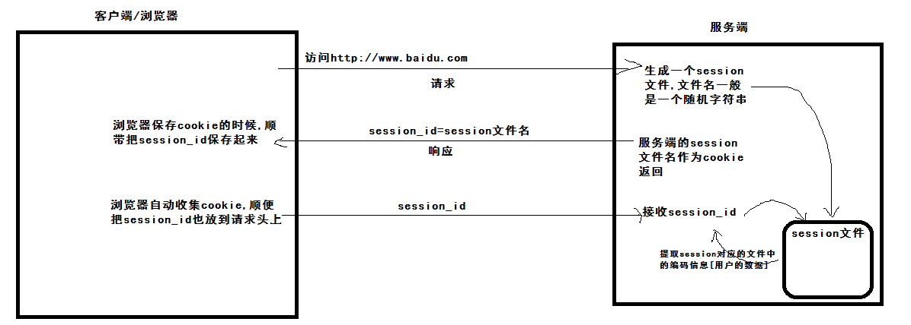
django中在2.0以后的版本默认采用了数据库保存session，这主要为了适应当前市面上大部分公司开发项目采用分布式服务器集群而调整的.但是我们目前是没有学到django的数据库操作,所以我们可以先根据官网说明,把session保存到文件中.
主应用目录/settings.py, 代码:
xxxxxxxxxx121# 配置项2# session核心类3SESSION_ENGINE = "django.contrib.sessions.backends.file"4# 保存到文件: django.contrib.sessions.backends.file5# 保存到数据库: django.contrib.sessions.backends.db # 需要配置数据库连接6# 保存到缓存中: django.contrib.sessions.backends.cache # 需要配置缓存连接78# session存储目录[如果不设置,则默认是系统的缓存目录]9# 3.0以前的django 通过以下代码配置10# SESSION_FILE_PATH = os.path.join(BASE_DIR, "session")11# 3.0以后通过以下配置12SESSION_FILE_PATH = BASE_DIR / "session_path" # 路径拼接，如果当前目录不存在，必须手动创建，否则报错为了方便学习session的操作，我们创建一个sess子应用
xxxxxxxxxx11python manage.py startapp sess总路由，djdemo/urls.py，代码：
xxxxxxxxxx91from django.contrib import admin2from django.urls import path, include34urlpatterns = [5 path('admin/', admin.site.urls),6 path('home/', include('home.urls', namespace="index")), # namespace 是include函数的参数，namespace的值就是提供给reverse使用的7 path('my/', include("mycookie.urls")), # cookie功能学习8 path('sess/', include("sess.urls")), # session功能学习9]
sess/urls.py，代码：
xxxxxxxxxx101from django.urls import path,re_path23from . import views4urlpatterns = [5 # path("路由url","视图函数","路由别名"),67 path("session/set/", views.set_session),8 path("session/get/", views.get_session),9 path("session/del/", views.del_session),10]sess/views.py 代码:
xxxxxxxxxx71def set_session(request):2 """设置session"""3 # session保存在服务端，所以所有关于session的操作都是由request.session来完成的4 #5 request.session["uname"] = "root"6 request.session["uid"] = 17 return HttpResponse("设置session数据")
xxxxxxxxxx111def get_session(request):2 """获取session"""3 print(f"uname={request.session.get('uname')}") # format string python3.6提供的4 print(f"uid={request.session.get('uid')}")5 6 # 获取session所有的键值对7 print(request.session.items())8 9 # 获取session数据的有效，默认值是：2周 ==> 60 * 60 * 24 * 7 * 210 print(request.session.get_session_cookie_age() )11 return HttpResponse("获取session数据")
xxxxxxxxxx91def del_session(request):2 """删除session数据"""3 # 删除单个指定名称的session4 if request.session.get("name"):5 request.session.pop("name")67 # 删除所有的session，慎用8 request.session.clear()9 return HttpResponse("删除session数据")随着项目的运行时间越长，用户量上来了，那么session数据也会不断增加，所以django虽然会自动删除过期的sesssion数据，但是如果用户没有正常注销的情况下，django是不会自动删除的，此时我们可以借助终端命令来进行删除。
xxxxxxxxxx11python manage.py clearsessions
Base64是网络上最常见的用于传输8Bit字节码的编码方式之一。 Base64就是一种基于64个可打印字符来表示二进制数据的方法。 64个可打印编码字符就是小写字母a-z、大写字母A-Z、数字0-9、符号"+"、"/"（再加上作为垫字的"="，实际上是65个字符） base64的使用一般无非就是编码和解码： 编码是从二进制数据流经过编码处理成base64字符的过程，可用于在HTTP环境下传递较长的标识信息。例如：图片内容 解码是从base64字符还原到二进制字节流的过程
在python中，base64是内置常用的标准模块，我们可以直接通过import导入base64模块直接使用。
在javascript中，也内置了base64的相关函数，分别是atob与btoa。
b64demo.py，代码：
xxxxxxxxxx211import json, base6423if __name__ == '__main__':4 # 要编码的原始数据5 data = {"uname":"root","uid":1}6 print(data)7 # 先转换成bytes类型数据8 data_bytes = json.dumps({"uname": "root", "uid": 1}).encode()9 print(data_bytes)10 # 编码11 base_data = base64.b64encode(data_bytes)12 print(base_data)1314 # 解码15 str_bytes = b'eyJ1bmFtZSI6ICJyb290IiwgInVpZCI6IDF9'16 ori_data = base64.b64decode(str_bytes).decode()17 # 字符串18 print(ori_data)19 # 变回原来的字典20 data = json.loads(ori_data)21 print(data)作业：
xxxxxxxxxx1211. 找到python的内置模块：struct，pickle2 找到第三方模块：ujson，orjson3 查找资料，并类似base64的笔记一样，整理这几个模块的内容：4 1. 使用2-3句话，简单概括上面几个模块的情况[用途，基本信息]5 2. 基本用法和代码672. 参考第1题的要求，查找并整理资料，找到itsdangrous模块中关于对字符串的编码，解码的基本用法，和设置有效期的用法8 https://itsdangerous.palletsprojects.com/en/2.0.x/9 1. 使用2-3句话，简单概括上面模块的情况[用途，基本信息]10 2. 基本用法和代码[ JSONWebSignatureSerializer ]11 123. 参考上面的cookie登陆认证，采用上面的登陆页面，实现一个session认证功能。
在django中所有的路由最终都被保存到一个变量 urlpatterns., urlpatterns必须声明在主应用下的urls.py总路由中。这是由配置文件settings设置的ROOT_URLCONF指定的。
在django运行中，当客户端发送了一个http请求到服务端，服务端的web服务器则会从http协议中提取url地址, 从程序内部找到项目中添加到urlpatterns里面的所有路由信息的url进行遍历匹配。如果相等或者匹配成功，则调用当前url对应的视图方法。
在给urlpatterns路由列表添加路由的过程中,django一共提供了2个函数用于绑定路由与视图关系。
xxxxxxxxxx51from django.urls import path # 普通路由2from django.urls import re_path # 正则路由，会把url地址看成一个正则模式与客户端的请求url地址进行正则匹配34# path和re_path 使用参数一致.仅仅在url参数和接收参数时写法不一样5# 如果在版本小于django2.0，只有一个django.urls.url 函数用于注册路由，url不仅支持path普通路由，也支持re_path正则路由创建一个user子应用，用于完成关于路由进阶的学习
xxxxxxxxxx11python manage.py startapp useruser/urls.py，代码：
xxxxxxxxxx51from django.urls import path, re_path23urlpatterns = [4 5]总路由，djdemo/urls.py，代码：
xxxxxxxxxx101from django.contrib import admin2from django.urls import path, include34urlpatterns = [5 path('admin/', admin.site.urls),6 path('home/', include('home.urls', namespace="index")), # namespace 是include函数的参数，namespace的值就是提供给reverse使用的7 path('my/', include("mycookie.urls")), # cookie功能学习8 path('sess/', include("sess.urls")), # session功能学习9 path('user/', include("user.urls")), # 路由进阶10]
绑定的路由的执行上效率，使用path比re_path的效率高很多，因为path默认情况下仅仅是通过字符串比较，而re_path是使用正则匹配。
xxxxxxxxxx21 # path("路由url",视图函数,"路由别名"),2 path("index4", views.index4,name="index4" ),
子应用路由,user/urls.py,代码;
xxxxxxxxxx71from django.urls import path, re_path2from . import views3urlpatterns = [4 # re_path(r"^info/(?P<参数名1>正则)/(?P<参数名2>正则).....$", views.info1),5 re_path(r"^info/(?P<id>\d+)/(?P<page>0[1-9]+)$", views.info1),6 re_path(r"^mobile/(?P<mobile>1[3-9]\d{9})$", views.info2),7]视图代码中接收路由参数，user/views.py，代码:
xxxxxxxxxx141from django.http import HttpResponse23# 接受来自路由的正则参数4# def info1(request, 参数名1, 参数名2, .....):567def info1(request, id, page):8 print(f"id={id}, page={page}")9 return HttpResponse("OK")101112def info2(request, mobile):13 print(f"mobile={mobile}")14 return HttpResponse("OK")django的url路由加斜杠的问题
在django路由中编写url地址时为了快速查找, 建议最好不加上 / 在路由的后面.当用户访问对应视图的路由时, 加不加斜杠, django都能转换到正确的url地址，这个方式虽然好，但是会导致，我们客户端的静态文件的url路径如果是相对路径，则会被django这个做法导致出现路径正确的情况，所以不要加斜杠。当然，如果我们编写的是属于前后端分离的项目的话，加不加斜杠，不存在影响。
xxxxxxxxxx11re_path("goods/(?P<id>\d+)/", views.index3),
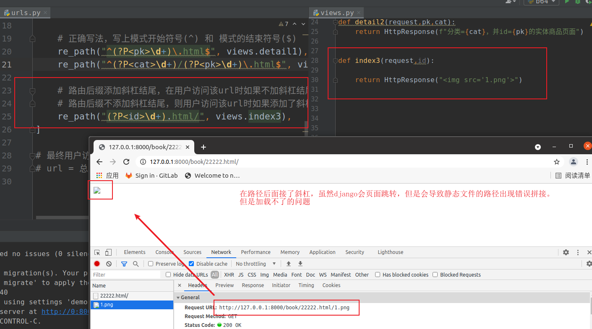
也可以叫路由验证器，有2个作用：
文档：https://docs.djangoproject.com/zh-hans/4.2/topics/http/urls/#path-converters
内置转换器源码：django.urls.converters，别名设置：DEFAULT_CONVERTERS
常见的内置路由转换器：
xxxxxxxxxx51str - 匹配除了 '/' 之外的非空字符串。如果表达式内不包含转换器，则会默认匹配字符串。2int - 匹配 0 或任何正整数。返回一个 int 。3slug - 匹配任意由 ASCII 字母或数字以及连字符和下划线组成的短标签。比如，building-your-1st-django_site 。4uuid - 匹配一个格式化的 UUID 。为了防止多个 URL 映射到同一个页面，必须包含破折号并且字符都为小写。比如，075194d3-6885-417e-a8a8-6c931e272f00。返回一个 UUID 实例。5path - 匹配非空字段，包括路径分隔符 '/' 。它允许你匹配完整的 URL 路径而不是像 str 那样匹配 URL 的一部分。user/urls.py，代码：
xxxxxxxxxx151from django.urls import path, re_path2from . import views34urlpatterns = [5 # path("url路径", 视图函数/视图类, name="路径别名"),6 path("index/", views.index),7 # re_path(r"^url路径/(?P<参数变量名>正则模式)/$", 视图函数/视图类),8 re_path(r"^info/(?P<id>\d+)/$", views.info),9 re_path(r"^goods/(?P<cat_id>\d+)/(?P<attr_id>\d+)/$", views.goods),10 path("img/", views.img),11 path("rev/<int:num>/", views.inbuild_reverse),12 path("rev/<str:content>/", views.inbuild_reverse2),13 path("rev/<uuid:ustr>/", views.inbuild_reverse3), # str会包含uuid的模式，str和uuid同时使用时，str必须写在后面14]15user/views.py，代码：
xxxxxxxxxx121"""路由转换器[了解]"""2def inbuild_reverse(request, num):3 """"内置路由转换器"""4 return HttpResponse(f"num={num}")56def inbuild_reverse2(request, content):7 """"内置路由转换器"""8 return HttpResponse(f"content={content}")910def inbuild_reverse3(request, ustr):11 """"内置路由转换器"""12 return HttpResponse(f"ustr={ustr}")
在当前子应用下新建converters.py下编写的，这里是我们刚学习，所以为了方便直接在路由urls.py下编写，代码：
xxxxxxxxxx101from django.urls.converters import StringConverter, register_converter234class MobileConverter(StringConverter):5 regex = r"1[3-9]\d{9}"678# register_converter(路由转换类, "调用别名")9register_converter(MobileConverter, "mob")10路由中使用自定义路由转换器，user/urls.py，代码：
xxxxxxxxxx121from django.urls import path, re_path2from . import views3from . import converters4urlpatterns = [5 re_path(r"^info/(?P<id>\d+)/(?P<page>0[1-9]+)/$", views.info1),6 re_path(r"^mobile/(?P<mobile>1[3-9]\d{9})$", views.info2),7 # 路由转换器[路径转换器]8 path('info/<int:id>', views.info3),9 path('img/<uuid:img_id>', views.info4),10 # 使用自定义路由转换器11 path("sms/<mob:mobile>", views.info5),12]视图中也可以接收来自路由转换器转换后的数据，views.py，代码：
xxxxxxxxxx31def info5(request, mobile):2 print(f"mobile={mobile}")3 return HttpResponse("ok, info5")补充：
xxxxxxxxxx111自定义路由转换器，实际上就是django在对路由进行数据转换和简写正则路由的实现，这种实现方式是基于不同的转换器类来完成，开发者要实现自定义转换器，需要编写的类必须符合官方要求的3个基本要求：2 1. 必须以类格式编写3 2. 必须声明属性和方法：regex 和 方法：to_python,to_url4 3. 必须通过register_converter(转换器类名，"别名")进行注册才能被调用56这种实现方式，实际就是对编程领域的设计模式的一种应用。7设计模式，前人总结下来的基于固定业务场景的解决方案就是设计模式。8编程中，设计模式有23种不同设计模式。9其中，我们上面这种就是叫 策略模式1011一般在工作中，往往可以使用策略模式，来进行营销活动[优惠券、打折]的实现